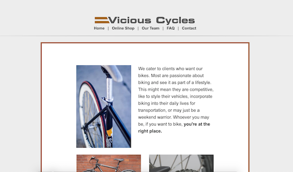

Karen Sniquer
Web & Graphic Designer
Karen currently works as a production assistant at a local print shop, as well as a graphic designer at a local full service web firm in North Carolina. Her background is in fine arts, although in the past six years, she has transitioned into digital art and design. She is based in Durham, and in her free time, Karen can be found at a brewery, music show at one of the Triangle's awesome venues, or hiking on a trail.
Featured Projects
View selected projects below. More information can be found at karensniquer.com.
Vicious Cycles Website
Designed the website for local bike shop, Vicious Cycles, from scratch. The old website Vicious Cycles needed a refresh.
View project / case studyWork Experience
Currently, Karen works as a graphic designer and production assistant at a local print shop in Durham, NC. She is pursuing a degree in web development and aspires to begin a career in the tech field by mid-2021.
Production Assistant
01/2017 - Present
Manages the production schedule at the print shop. Prepares projects for production in the pre-press stage. Communicates and coordinates with clients.
Skills:
- Pre-press preparation
- Managing production schedules
- Communicating and coordinating with clients
Graphic Designer
02/2016 - Present
Planning, designing, and implementing e-marketing campaigns for clients.
Skills:
- Designing e-blasts, web banners, print designs, & more for marketing campaigns.
- Working one-on-one with clients to create promotional campaigns.
- Uploading and drafting e-blasts on MailChimp and Shopify.
Education
Wake Technical Community College - Raleigh, NC
Associate in Web Development, 2019 - Present
The University of North Carolina at Greensboro - Greensboro, NC
Bachelor in Fine Arts, Printmaking, 2010 - 2014